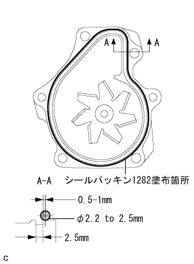
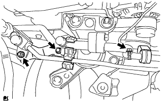
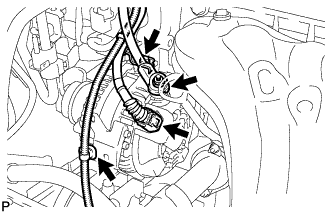
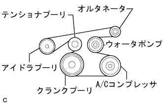
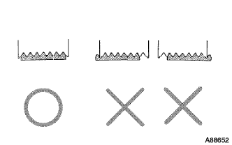

Water Pump Assembly (2AZ-FE) Installation |
| 1. Install Water Pump Assembly |
Clean the installation surface of the cylinder block.
 |
Apply seal packing 1282B (diameter 2.2-2.5 mm) along the outside of the groove of the water pump.
 |
Install the water pump and 2 wire harness clamp brackets with 4 bolts and 2 nuts.
 |
Fit the wire harness into the wire harness clamp bracket.
Install the crankshaft position sensor connector.
| 2. Install Water Pump Pulley |
 |
Using SST, install the water pump pulley with 4 bolts.
| 3. Engine Mounting Spacer Installation |
 |
Install the engine mounting spacer with 2 bolts.
| 4. Install Engine Mounting Insulator Sub-assembly RH |
 |
Install the RH engine mounting insulator with 3 bolts.
 |
Install the engine mounting insulator RH to the engine mounting bracket RH with the bolt and 2 nuts.
 |
Install the cooler pipe bracket with 2 bolts and the nut.
| 5. Radiator Reserve Tank Assembly Connection |
 |
Install the radiator reserve tank assembly with 2 bolts.
| 6. Install Alternator Assembly |
 |
Check that the crankshaft position sensor wire harness is securely fitted into the wire harness clamp bracket and passes behind the rib of the timing chain cover.
 |
Install the Alternator with the 2 bolts.
 |
Install the harness clamp.
Install the clamp bracket with the bolt.
Connect the harness to the +B terminal with the nut.
Install the terminal cap.
Connect the connector.
| 7. Install Fan & Alternator V Belt |
 |
Using SST, slowly turn the V-belt tensioner clockwise and install the V-belt.
 |
Check that the belt is fitted on each pulley.
 |
Check that the belt is correctly set on each pulley.
Start the engine and check that the belt rotates smoothly with no abnormal noise.
| 8. Connect Battery Negative Terminal |
| 9. Add Coolant (Toyota Genuine Super Long Life Coolant) |
Close the radiator drain cock plug.
Close the cylinder block drain cock plug.
 |
Fill coolant of the specified concentration up to the B line of the radiator reserve tank.
After installing the reservoir tank cap, warm up the engine until the thermostat opens. (A)
After warm-up, repeat the cycle of 3000rpm engine speed for 5 seconds ←→ idling for 45 seconds 8 times or more (7 minutes or more). (B)
Stop the engine and wait until the coolant cools down, and if the level is below LOW, add coolant of the specified concentration through the filler again and adjust it to between FULL and LOW. (C)
Repeat steps (A) to (C) until the coolant level in the radiator reservoir tank stops dropping.
When the level stops dropping, add coolant of the specified concentration through the filler again to adjust the coolant level in the radiator reservoir tank to between FULL and LOW.
| 10. Inspect for Coolant (Toyota Genuine Super Long Life Coolant) Leaks |
 |
Fill the radiator with coolant and install a radiator cap tester.
Warm up the engine.
118kPa{1.2kgf/cm2Pump it to } and check that the pressure does not drop.
| 11. Install Radiator Upper Air Deflector |
Install the radiator upper air deflector with the 8 clips.
| 12. Install Engine Under Cover Rear RH |
Install the engine under cover rear RH with the 5 clips.
| 13. Install Engine Under Cover NO.1 |
Install the engine under cover No.1 with the 6 bolts and 7 clips.
| 14. Install Front Tire RH |
| 15. Setting Procedure When Disconnecting/Reconnecting Battery Terminal |
)